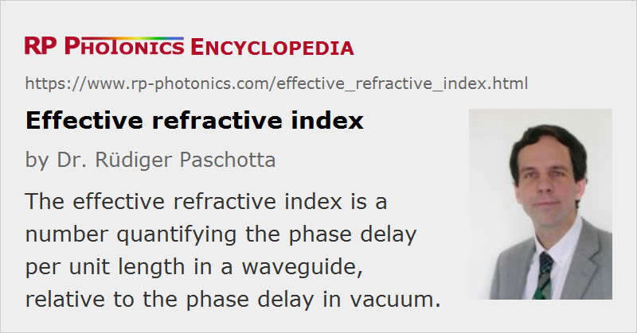

Effective Refractive Index
Definition: a number quantifying the phase delay per unit length in a waveguide, relative to the phase delay in vacuum
More general term: refractive index
German: effektiver Brechungsindex
Category: fiber optics and waveguides
Formula symbol: neff
Units: (dimensionless)
How to cite the article; suggest additional literature
Author: Dr. Rüdiger Paschotta
For plane waves in homogeneous transparent media, the refractive index n can be used to quantify the increase in the wavenumber (phase change per unit length) caused by the medium: the wavenumber is n times higher than it would be in vacuum. The effective refractive index neff has the analogous meaning for light propagation in a waveguide with restricted transverse extension: the β value (phase constant) of the waveguide (for some wavelength) is the effective index times the vacuum wavenumber:
The mode-dependent and frequency-dependent β values can be calculated with a mode solver software and depend on the refractive index profile of the waveguide.
Note that the effective refractive index depends not only on the wavelength but also (for multimode waveguides) on the mode in which the light propagates. For this reason, it is also called modal index. Obviously, the effective index is not just a material property, but depends on the whole waveguide design. Its value can be obtained with numerical mode calculations, for example. It can vary substantially near a mode cut-off.
The effective index may be a complex quantity. In that case, the imaginary part describes gain or loss – see the article on refractive index for more details.
The effective refractive index contains information on the phase velocity of light, but not on the group velocity; for the latter, one can similarly define an effective group index in analogy to the group index for plane waves in a homogeneous medium.
A common but wrong belief is that the effective refractive index is a kind of weighted average of the refractive index of core and cladding of the waveguide, with the weight factors determined by the fractions of the optical power propagating in the core and cladding. This impression may result from the common observation that higher-order modes, e.g. of a fiber, have a lower effective index and also a lower mode overlap with the core. However, consider e.g. a step-index multimode waveguide with a high numerical aperture and large core diameter. Here, all modes overlap to nearly 100% with the core (i.e. the mode overlaps are very similar), whereas the effective indices differ substantially.
Questions and Comments from Users
2020-06-02
If I want to calculate the effective refractive index in the process of coupling light into a microring to form an optical frequency comb, do I need to take into account the different effective refractive indices in the waveguide and the microring?
Answer from the author:
Each device (waveguide and microring) will have its own effective refractive index – more precisely, one such value for each guided mode, if it is not single-mode.
2020-06-03
Can we use RP Fiber Power to directly calculate the effective refractive index in microrings?
Answer from the author:
Unfortunately, this might work only with limited accuracy if you have a large refractive index contrast. There might also be a problem with the limitation that the mode solver cannot take into account the strong curvature.
Here you can submit questions and comments. As far as they get accepted by the author, they will appear above this paragraph together with the author’s answer. The author will decide on acceptance based on certain criteria. Essentially, the issue must be of sufficiently broad interest.
Please do not enter personal data here; we would otherwise delete it soon. (See also our privacy declaration.) If you wish to receive personal feedback or consultancy from the author, please contact him e.g. via e-mail.
By submitting the information, you give your consent to the potential publication of your inputs on our website according to our rules. (If you later retract your consent, we will delete those inputs.) As your inputs are first reviewed by the author, they may be published with some delay.
See also: propagation constant, refractive index, group index, waveguides, The Photonics Spotlight 2007-10-07
and other articles in the category fiber optics and waveguides
|  |
If you like this page, please share the link with your friends and colleagues, e.g. via social media: 


These sharing buttons are implemented in a privacy-friendly way! |
2020-05-01
Does this mean, that when simulation software gives the effective refractive index, the gain or loss can be calculated? If so, what formula should be used?
Answer from the author:
Only if the complex refractive index is computed. Its imaginary part times 4π / λ gives you the exponential intensity absorption or gain coefficient – with signs depending on conventions.